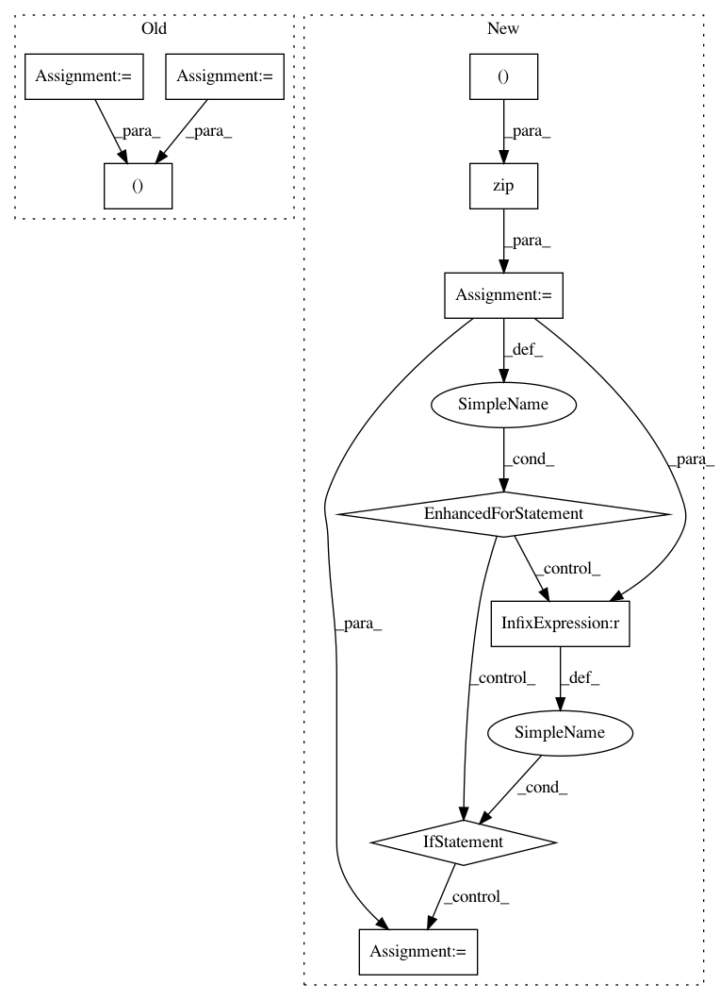

34cd4f7599e47bfaaac20b9ebde1e35fc1cd44ee,catalyst/utils/pandas.py,,read_multiple_dataframes,#Any#Any#Any#Any#Any#Any#,173
Before Change
(tuple): tuple with 4 dataframes
whole dataframe, train part, valid part and infer part
df_train = merge_multiple_fold_csv(fold_name="train", paths=in_csv_train)
df_valid = merge_multiple_fold_csv(fold_name="valid", paths=in_csv_valid)
df_infer = merge_multiple_fold_csv(fold_name="infer", paths=in_csv_infer)
if args_are_not_none(tag2class, tag_column, class_column):
df_train = map_dataframe(df_train, tag_column, class_column, tag2class)
df_valid = map_dataframe(df_valid, tag_column, class_column, tag2class)
df_infer = map_dataframe(df_infer, tag_column, class_column, tag2class)
result_dataframe = df_train. \
append(df_valid, ignore_index=True). \
append(df_infer, ignore_index=True)
return result_dataframe, df_train, df_valid, df_infer
def read_csv_data(
After Change
result_df = None
fold_dfs = {}
for fold_df, fold_name in zip(
(in_csv_train, in_csv_valid, in_csv_infer),
("train", "valid", "infer")
):
if fold_df is not None:
fold_df = merge_multiple_fold_csv(
fold_name=fold_name, paths=fold_df
)
if args_are_not_none(tag2class, tag_column, class_column):
fold_df = map_dataframe(
fold_df, tag_column, class_column, tag2class
)
fold_dfs[fold_name] = fold_df
result_df = fold_df \
if result_df is None \
else result_df.append(fold_df, ignore_index=True)
output = (
result_df,
fold_dfs.get("train", None),
fold_dfs.get("valid", None),
In pattern: SUPERPATTERN
Frequency: 3
Non-data size: 10
Instances
Project Name: Scitator/catalyst
Commit Name: 34cd4f7599e47bfaaac20b9ebde1e35fc1cd44ee
Time: 2019-12-31
Author: scitator@gmail.com
File Name: catalyst/utils/pandas.py
Class Name:
Method Name: read_multiple_dataframes
Project Name: ilastik/ilastik
Commit Name: 45ee34807f4292aa7a055a89cf03fe60f182da35
Time: 2015-02-13
Author: buwen@stud.uni-heidelberg.de
File Name: ilastik/applets/tracking/base/trackingBaseGui.py
Class Name: TrackingBaseGui
Method Name: handleEditorRightClick